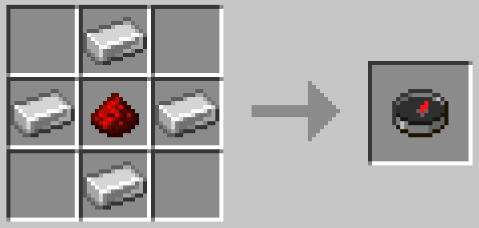
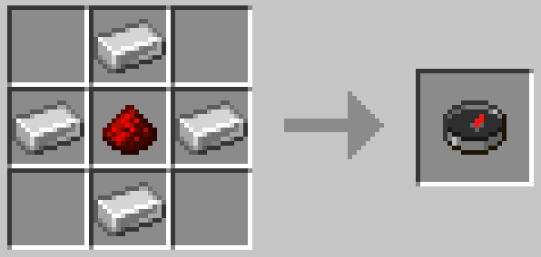

The compass, also known as the "how do I craft this item" as I never remember how to craft this item. The compass's features include not one, not two, but only one feature which is leading you towards a spawnpoint. This can be used to navigate back to your house if you slept there or just the world spawnpoint where you spawn at. To craft it, you require 4 iron ingots and 1 redstone, easy I know, but I hate this item.
 
